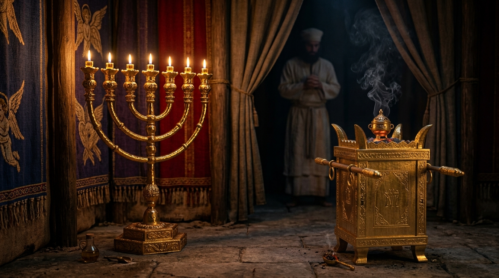

A Mobília do Céu na Terra: O Significado Tipológico dos Utensílios do Tabernáculo
Quando Deus ordenou a Moisés no monte Sinai a construção do Tabernáculo — uma tenda portátil que serviria como o centro cultual e a habitação de Sua glória no meio do acampamento de Israel —, Ele deu uma instrução estricta e repetida: *"Olha que tudo faças segundo o modelo que te foi mostrado no monte"* (Êxodo 25:40). Os móveis, os altares, os utensílios de ouro e bronze e as cortinas do santuário não foram frutos de invenção artística humana ou de caprichos estéticos da época, mas cópias físicas, tridimensionais e tipológicas de realidades celestiais. Cada objeto do santuário foi divinamente projetado para atuar como um sermão visual sobre a santidade de Deus e sobre o caminho da redenção.
Ao percorrer os espaços sagrados — desde o Pátio Exterior, passando pelo Lugar Santo, até adentrar o temível Santo dos Santos —, o israelita visualizava em etapas o progresso da aproximação de um Deus santo. Cada objeto — o Altar do Holocausto, a Pia de Bronze, a Mesa dos Pães da Proposição, o Candelabro de Ouro (Menorá), o Altar do Incenso e a Arca da Aliança — funcionava como uma peça de um quebra-cabeça profético que apontava diretamente para a pessoa e a obra de Jesus Cristo. Este estudo exaustivo desvenda o significado teológico de cada um desses instrumentos da graça veterotestamentária.
Índice do Estudo:
- 1. O Altar do Holocausto e a Pia de Bronze: A Entrada no Pátio
- 2. A Mesa dos Pães da Proposição e a Menorá: A Comunhão e a Luz
- 3. O Altar do Incenso: A Fragrância da Oração e da Intercessão
- 4. A Arca da Aliança e o Propiciatório: O Trono da Misericórdia
- 5. O Véu do Templo: A Separação Rompida no Calvário
- 6. Tabela Analítica: Os Objetos Sagrados e seu Cumprimento em Cristo
1. O Altar do Holocausto e a Pia de Bronze: A Entrada no Pátio
Assim que o adorador entrava pelo único portal do Pátio Exterior do Tabernáculo, deparava-se imediatamente com dois grandes objetos de bronze: o **Altar do Holocausto** e a **Pia de Bronze**. O Altar, onde os animais eram sacrificados e o fogo nunca se apagava, simbolizava a absoluta necessidade de substituição penal e derramamento de sangue para que o pecado pudesse ser coberto. Logo em seguida, antes de os sacerdotes avançarem rumo à tenda, encontrava-se a Pia de Bronze cheia de água, onde eles lavavam as mãos e os pés. Este ato simbolizava a purificação diária da contaminação mundana. No Novo Testamento, esses dois objetos encontram seu cumprimento cabal em Cristo: Ele é tanto o Altar do sacrifício perfeito quanto a fonte de água viva que nos lava e regenera.
2. A Mesa dos Pães da Proposição e a Menorá: A Comunhão e a Luz
Ao cruzar a primeira cortina e entrar no **Lugar Santo**, o ambiente era iluminado exclusivamente por dois móveis de ouro puro: a **Mesa dos Pães da Proposição** (com doze pães que representavam as tribos em comunhão constante com Deus) e a **Menorá** (o candelabro de ouro de sete braços alimentado por azeite puro). A Mesa tipifica Cristo como o Pão da Vida, aquele que sustenta espiritualmente a Sua Igreja em comunhão íntima. A Menorá tipifica Cristo como a Luz do Mundo e o Espírito Santo como o óleo que ilumina o entendimento espiritual do crente, permitindo-lhe contemplar as belezas da santidade de Deus no santuário.
3. O Altar do Incenso: A Fragrância da Oração e da Intercessão
Posicionado imediatamente diante do Véu que separava o Lugar Santo do Santo dos Santos, encontrava-se o pequeno **Altar do Incenso**, onde o sacerdote queimava especiarias aromáticas duas vezes ao dia. O fumo aromático que subia continuamente representava as orações dos santos subindo fragrantemente perante o trono de Deus (Apocalipse 5:8). Este objeto nos ensina que a adoração e a intercessão fervorosa são essenciais na vida do povo de Deus, cujo acesso ao altar celestial é garantido pela intercessão eterna e contínua do nosso Grande Sumo Sacerdote, Jesus Cristo, que vive para interceder por nós.
4. A Arca da Aliança e o Propiciatório: O Trono da Misericórdia
O objeto mais sagrado de todo o Tabernáculo era a **Arca da Aliança**, uma caixa de madeira de acácia revestida de ouro por dentro e por fora, guardada no escuro silêncio do Santo dos Santos. Em seu interior repousavam as Tábuas da Lei (que condenavam o homem pela quebra da aliança), o jarro de maná (que lembrava a provisão no deserto) e a vara de Arão que floresceu (sinal da autoridade sacerdotal escolhida). Sobre a Arca estava a sua tampa de ouro maciço, chamada de **Propiciatório** (*Kapporeth*), ladeada por dois querubins de ouro cujas asas cobriam o trono. Era sobre este propiciatório que o sumo sacerdote aspergia o sangue no Dia da Expiação. A Arca tipifica o trono glorioso de Deus, onde a justiça inflexível (a Lei) e a misericórdia perdoadora (o sangue aspergido) se encontram em perfeita harmonia redentora em Cristo.
Tabela Analítica: Os Objetos Sagrados e o Cumprimento em Cristo
| Objeto Sagrado | Localização no Santuário | Significado Tipológico e Cumprimento |
|---|---|---|
| Altar do Holocausto | Pátio Exterior | O sacrifício vicário e a propiciação pelos pecados em Cristo. |
| Menorá (Candelabro) | Lugar Santo | Cristo como a Luz do Mundo e a iluminação do Espírito. |
| Altar do Incenso | Lugar Santo (diante do Véu) | A intercessão perpétua de Cristo e as orações dos santos. |
| Arca da Aliança | Santo dos Santos | O trono da graça, onde a justiça e a misericórdia se encontram. |
💡 Aplicação Prática: O Privilégio do Acesso Irrestrito a Deus
O estudo minucioso dos objetos sagrados do Tabernáculo culmina na maior e mais gloriosa notícia do Novo Testamento: no exato momento em que Jesus expirou na cruz do Calvário, o **Véu do Templo** — uma cortina pesada e espessa que separava o homem da presença de Deus — rasgou-se de alto a baixo, de lés a lés. O santuário terrestre foi aberto. Aquilo que antes era restrito a um único homem, uma vez por ano, tornou-se acessível a todo e qualquer crente por meio do sangue de Jesus.
Que esta verdade transformadora guie a sua vida devocional diária. Você não precisa mais de rituais distantes ou intermediários humanos para se aproximar do Criador; através do sacrifício do Altar, iluminado pela Menorá, sustentado pelo Pão da Vida e com a intercessão do Altar do Incenso, você tem ousadia para entrar no próprio Santo dos Santos celestial. Aproxime-se de Deus com plena certeza de fé, rendendo graças por Aquele que se tornou o nosso Sumo Sacerdote para todo o sempre.
Navegação rápida:
- Voltar ⬅️ 5. Os Números
- Início dos Símbolos 🌱 Voltar para Símbolos
Apoie este projeto 🌱
Se este estudo foi útil, considere apoiar a manutenção do site.
Chave PIX (Celular):
marcosmontanaria@gmail.com